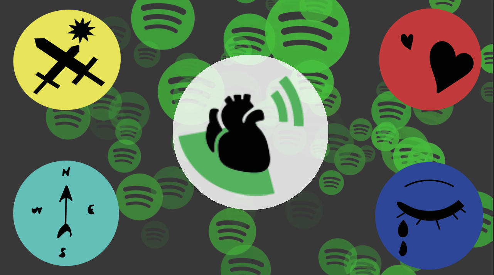
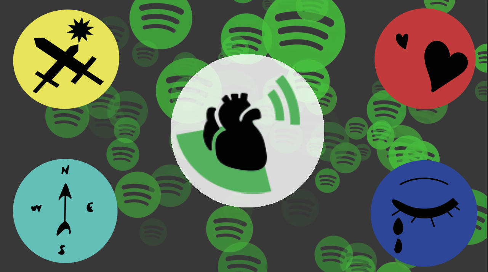

Published Games
To Grow
In this sidescroller, you play as a patient who is in a regression therapy session. You go through challenges of your past, and as you make mistakes, they rewind to a few seconds before you made it.
To Grow got ranked 4th between 1818 entries in Brackeys Jam 2020.2
To Grow got ranked 4th between 1818 entries in Brackeys Jam 2020.2

Sing Arena
Think fast and sing a lot! "Sing Arena - Party Game - Sing with your friends" is a game to have fun with family and friends, battling to be the one who knows more songs with the random words drawn

Songverse
An instrument the size of the Universe.
Songverse is a VR experience where the player may compose music while immersed in a universe-creation metaphor. It is possible to manipulate planets and their satellites to choose predefined sounds. Combine and build them to shape soundtacks that echo through all space!

Office Hours
Office jobs can often be boring, but with an abusive boss, it becomes almost a survival challenge!
In this stealth-puzzle, you must find ways to relieve yourself of work stress without being caught by your boss so you don't lose your mind!
In this stealth-puzzle, you must find ways to relieve yourself of work stress without being caught by your boss so you don't lose your mind!

Jazz Stories
Joe Hampton is a forgotten musician who never endured losing his best friend and partner. Joe lived his next 20 years, persisting on these memories; however, some events made him reevaluate his actions and recover his relationship with the people that still care for him.
Play as Joe through his memories and uncover the full cycle of success, longing and redemption.
Play as Joe through his memories and uncover the full cycle of success, longing and redemption.

Tetris N' Chill
A relaxing tetris experience.
Take a seat and enjoy the ancient pleasure of colorful pieces stacking.
Tetris N' Chill was developed as a submission for a proposed challenge, and was developed along five nights.
Take a seat and enjoy the ancient pleasure of colorful pieces stacking.
Tetris N' Chill was developed as a submission for a proposed challenge, and was developed along five nights.
Unity Tools

My Soundtrack
MySoundtrack enables Unity game developers to implement a soundtrack based on the game's situations and using tracks from player Spotify!
That way, the player can listen to his musics, guided by the moments of the game.

My Soundtrack
MySoundtrack enables Unity game developers to implement a soundtrack based on the game's situations and using tracks from player Spotify!
That way, the player can listen to his musics, guided by the moments of the game.
That way, the player can listen to his musics, guided by the moments of the game.